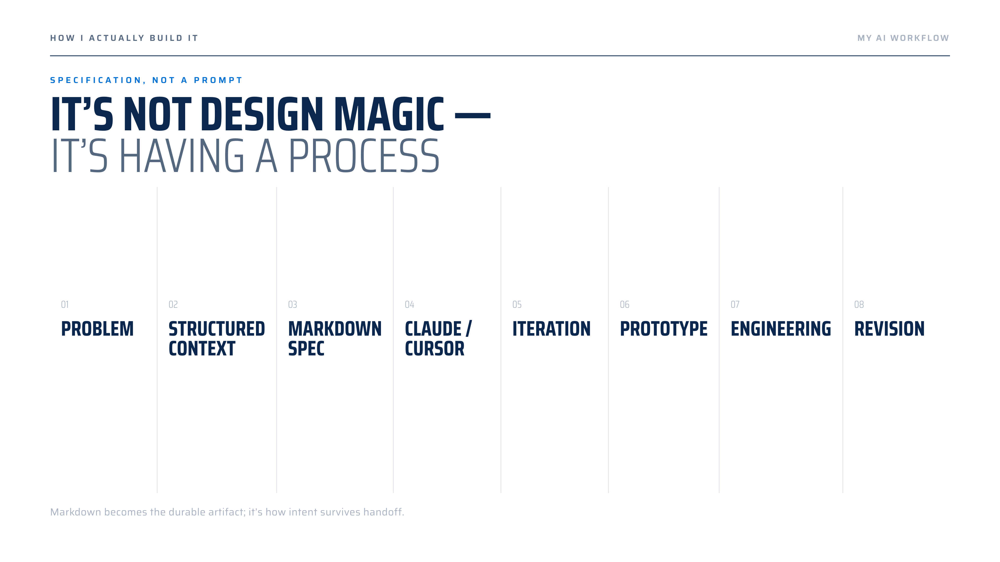

Specification, not a prompt.
Two designers cannot sit in every room with a hundred engineers. Design that only lives in one person’s head is a bottleneck. AI used as a drafting toy is the same bottleneck with extra steps. The work needed an operating system: a spec that outlives the chat, a standard that runs without me in the room, and a handoff engineers can pick up without translating.
A specification written before any prompt, pointed at the real codebase, iterated in code until a prototype runs, then revised against what engineering can actually ship.
Problem, users, and constraints written as a system. If I can’t state the decision in a sentence, no interface was going to save it.
Reusable instruction files and a prompt library pointed at the real codebase, so the first draft is already production-shaped.
The loop closes at engineering. A prototype nobody has pushed back on is still a proposal.

Spec library. Nine files. Click one to walk through it below.
12 rules. 10 skills. 17 specs. Version-controlled like code. Whatever generalizes gets pushed back so the next project inherits it. Three columns, on purpose: what I wrote from scratch, what I published as governance, and what I adopted and modified. The last column stays named as adopted. Claiming it as mine would be the one thing that costs credibility.
Design-to-code SOP: a discovery gate first, then an 8-step build.
Scores a PRD on quoted evidence, then gathers what’s missing.
One standard every spec is held to, annotated in a rail so it’s readable.
Every project one click from one page: versions, links, status.
Figma prototypes to GIF and org screenshots, without hand-editing.
How work starts, commits, and publishes: decided once, not per session.
House voice enforced by rule, not by remembering to ask for it.
Nothing sends, posts, or edits a shared doc without an explicit yes.
Token-first and component-first. Real hooks, never approximations.
One reconciled source for personas, so demo data can’t drift apart.
Anthropic’s set: test-driven development, systematic debugging, parallel agents.
Salesforce’s own SLDS validators, wired into the build loop.
Figma, Salesforce DX, and Playwright driven as one verification loop.
Playwright clicks every control on a build before a link gets shared.
A baseline fork every new prototype starts from, instead of scratch.
The same process, reused — from problem through revision
Numbered markdown files that outlive any chat and survive handoff
Every project starts from the same bar, not a blank session
Options, rationale, and tradeoff travel with the work
The artifact customers and engineers react to, not a deck
Agentic Advisor shipped — the method produced a production surface